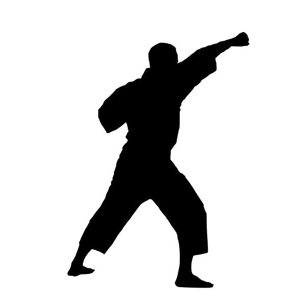

☯︎⠀Karate⠀☯︎

Una de las ventajas más evidentes del Karate es la mejora notable en la condición física de
los practicantes. A través de ejercicios que implican todo el cuerpo, se trabaja en la coordinación,
agilidad, fuerza y resistencia. Las sesiones de entrenamiento, al ser intensas y variadas,
contribuyen a un equilibrio físico que se refleja en una mejor postura, mayor flexibilidad
y un desarrollo muscular equilibrado.
El aspecto mental es un componente crucial en el Karate. Aprender y perfeccionar las técnicas requiere de
una concentración profunda, entrenando la mente para estar presente y enfocada.
[Ver curso]
☯︎⠀Taekwondo⠀☯︎

Sin duda, una de las mejores razones por las que deberías practicar Taekwondo es por la
gran condición que desarrollan sus practicantes.Es casi imposible llegar a ser un taekwondista sin
desarrollar habilidades increíbles con el cuerpo, especialmente sobre las principales
extremidades.
Ganarás flexibilidad en las piernas, fortaleza y rapidez, al mismo tiempo
que tus brazos se volverán dos guantes, espadas o dagas peligrosas.Cada combate de Taekwondo exige mucho de
sus oponentes, dos minutos parecieran nada, pero cuando eres tú el que está sobre el tatami luchando,
podrían ser una eternidad si no estás preparado.
[Ver curso]
☯︎⠀Jiu-jitsu⠀☯︎

Practicar Jiu Jitsu brasileño ofrece muchos beneficios tanto a nivel físico como mental.
Ayuda a mejorar la salud mental al proporcionar una vía de escape para la ansiedad y la
depresión. Esto se debe a que el Jiu Jitsu ayuda a reducir los niveles de estrés y ansiedad,
ofreciendo una distracción saludable para los que la necesitan.
El Jiu Jitsu brasileño también ofrece beneficios físicos. Esto incluye una mejora en la resistencia
cardiovascular, la fuerza, el equilibrio y la flexibilidad. Practicar Jiu Jitsu también puede
ayudar a prevenir lesiones al fortalecer los músculos y las articulaciones, reducir el riesgo de lesiones en
la espalda, y mejorar el alineamiento y la postura.
[Ver curso]
☯︎⠀Defensa Personal⠀☯︎

Más seguridad y confianza en uno mismo. Cuando aprendes técnicas de
defensa personal, te sientes más seguro y confiado en tu capacidad de protegerte ante cualquier
eventualidad. Esto se debe a que aprendes a reconocer situaciones de riesgo y a tomar medidas
para evitarlas, así como a desarrollar habilidades físicas y mentales que te permiten actuar de manera
efectiva en caso de necesidad.
La práctica de la defensa personal implica un entrenamiento físico intenso que te ayuda a mejorar tu
condición física, aumentar tu fuerza y resistencia, y a reducir el estrés. Además, el
aprendizaje de técnicas de relajación y meditación te ayudan a mantener la calma en situaciones de estrés y
a mejorar tu salud mental en general.
[Ver curso]
☯︎⠀Artes Marciales para niños⠀☯︎
Las artes marciales son una excelente forma de mejorar la salud física, mental y emocional
de los niños y niñas, y también les brindan valores importantes como la disciplina, el
respeto y la confianza en sí mismos.
Practicar artes marciales ayuda a los niños a mejorar su condición física, aumentar su fuerza y
flexibilidad, y a mantener un peso saludable. Esto puede ayudarles a prevenir enfermedades
relacionadas con el sedentarismo, como la obesidad, y a mejorar su salud en general.
[Ver curso]